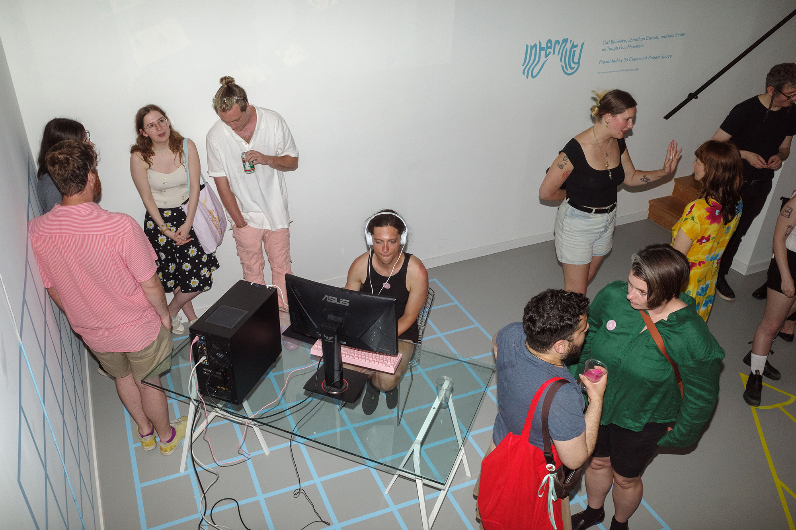
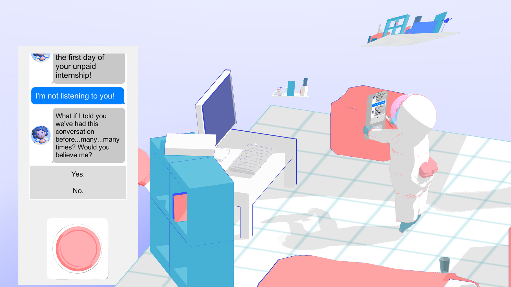
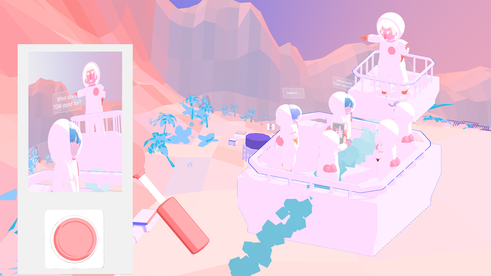
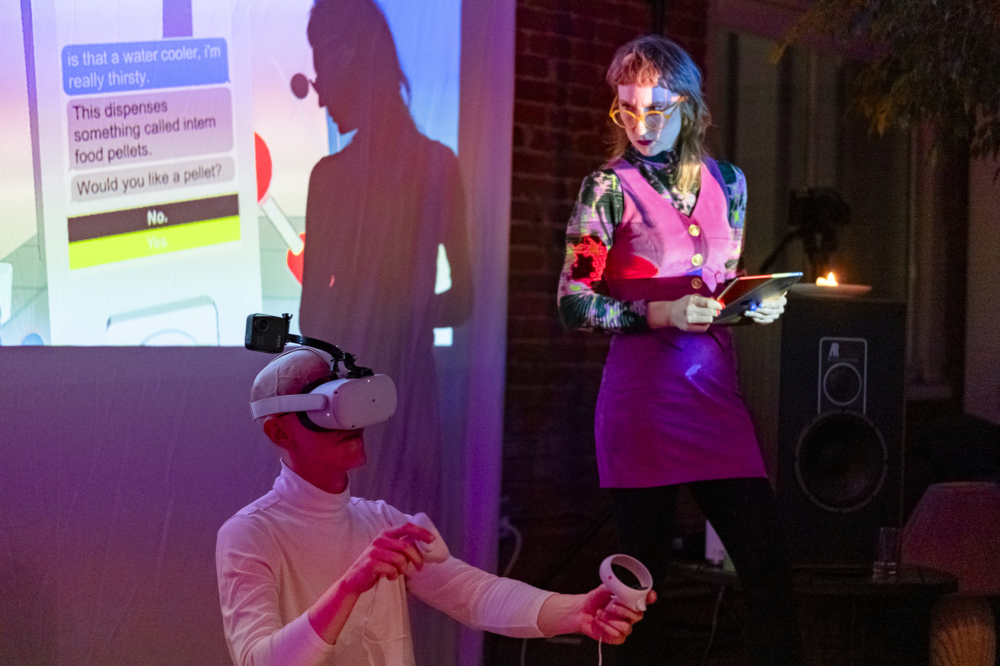
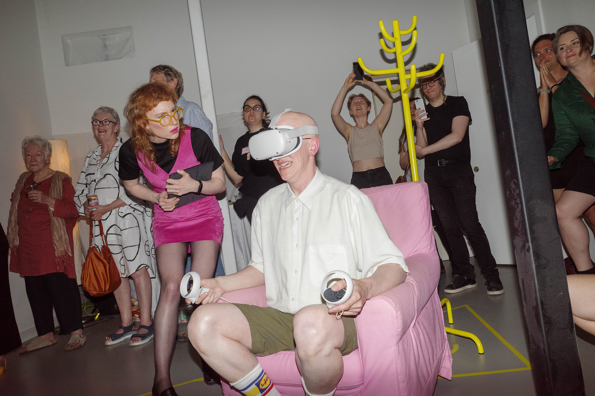

Internity (Intern Purgatory)

Entering a sterile, corporate space, the user is led through a wellness exercise only to find themselves in an orientation for an unpaid internship. The work resembles, in some ways, the virtual reality genre of office simulation, in which users immerse themselves in detailed digital recreations of mundane environments as a reassuring form of entertainment, but weaves instead a paranoid tale of corporate control and biohacking.
Intern Purgatory was completed with funds from Rhizome's Mobile VR microgrant and is available for viewing on the First Look: Artists' VR app at the New Museum, powered by EEVO.




